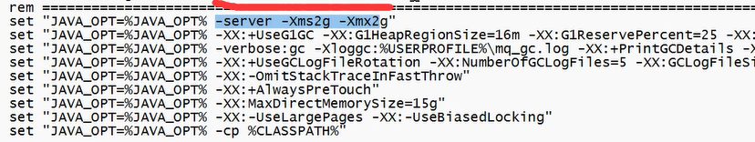
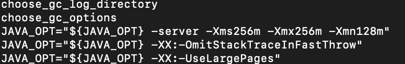
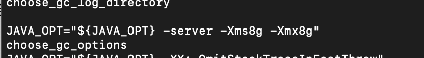
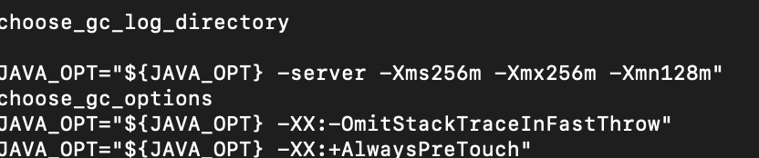

springboot 集成
作用
解耦 异步 削峰
问题
系统可用性降低
如何保证MQ的高可用
系统复杂度提高
怎么保证消息没有被重复消费？ 消费者保证。 防止消息丢失？
生产者 -- 使用事务消息
消费者 -- 使用消息确认
broker -- 早写盘，多备份
保证消息传递的顺序性？
保证消息处理一致性？
安装
下载地址：
https://rocketmq.apache.org/download
版本选择 4.9.3
windows版本方法：
修改启动脚本
因为RocketMQ的名称服务器和broker占用内存较大，所以需要将内存调低些。具体是将下面划红线部分替换为：
-server -Xms256m -Xmx256m -Xmn128m
- 修改 runserver.cmd

- 修改 runbroker.cmd 
设置环境变量：
在系统环境变量中新增
ROCKETMQ_HOME
指向 RocketMQ的安装目录（bin的上一层目录）
启动
启动名称服务器,先跳转到bin目录
mqnamesrv
启动broker服务器：
mqbroker -n localhost:9876
启动时需要指定名称服务器地址，这个是通过-n来指定的。
测试
先设置环境变量： set NAMESRV_ADDR=localhost:9876 然后运行生产者
tools.cmd org.apache.rocketmq.example.quickstart.Producer
和消费者
tools.cmd org.apache.rocketmq.example.quickstart.Consumer
linux版本方法：
修改启动脚本
将namesrv和broker的内存占用修改为： -server -Xms256m -Xmx256m -Xmn128m
-
修改nameServer的启动脚本 找到choose_gc_options后，在下面一行做如下修改 vi ./bin/runserver.sh 
-
修改broker的启动脚本 找到如下图  修改为前面所述的内存大小：
vi ./bin/runbroker.sh 
启动
启动名称服务器
nohup sh bin/mqnamesrv &
启动broker服务
nohup sh bin/mqbroker -n localhost:9876 &
测试
export NAMESRV_ADDR=localhost:9876
./bin/tools.sh org.apache.rocketmq.example.quickstart.Producer
./bin/tools.sh org.apache.rocketmq.example.quickstart.Consumer s
添加依赖和配置
<dependency>
<groupId>org.apache.rocketmq</groupId>
<artifactId>rocketmq-spring-boot-starter</artifactId>
<version>2.1.0</version>
</dependency>
rocketmq:
name-server: 127.0.0.1:9876 # rocketMQ 名称服务器
producer:
group: test # 发送组
topic: test-topic # topic 相当于一个地址
retry-times-when-send-failed: 5 # 错了以后重试几次
consumer:
group: test-consumer #消费者组
topic: test-topic # 消费topic
消息的发送
同步发送
@PostMapping("/send")
public Map<String,String> send(@RequestParam String msg) {
Message<String> message = MessageBuilder.withPayload(msg).build();
SendResult result = rocketMQTemplate.syncSend(topic,message);
if(SendStatus.SEND_OK.equals(result.getSendStatus())) {
return this.of("status", "ok");
}else {
return this.of("status", "error");
}
}
异步发送
public void asyncSend(String msg) {
Message<String> message = MessageBuilder.withPayload(msg).build();
rocketMQTemplate.asyncSend(topic, message, new SendCallback() {
@Override
public void onSuccess(SendResult sendResult) {
SendStatus sendStatus = sendResult.getSendStatus();
if(SendStatus.SEND_OK.equals(sendStatus)) {
System.out.println("异步发送消息成功");
}else {
System.out.println("异步发送没有成功。"+sendStatus.name());
}
}
@Override
public void onException(Throwable throwable) {
System.out.println("异步发送消息时发生了错误");
}
});
}
消息的接收
@Service
@RocketMQMessageListener(nameServer = "${rocketmq.name-server}", topic="${rocketmq.producer.topic}", consumerGroup = "${rocketmq.consumer.group}")
public class MQListener implements RocketMQListener<String> {
@Override
public void onMessage(String rocketMqMessage) {
System.out.println("=====I have got a message. = " + rocketMqMessage);
}
}
确保消息不丢失
1.发送事务消息
public void sendTransactional(String msg) {
Message message = MessageBuilder.withPayload(msg).build();
TransactionSendResult sendResult = rocketMQTemplate.sendMessageInTransaction(topic, message, transactionalListener);
}
@Component
@RocketMQTransactionListener
public class TransactionalListener implements RocketMQLocalTransactionListener {
int times = 0;
@Autowired
UserService userService;
@Override
public RocketMQLocalTransactionState executeLocalTransaction(Message message, Object o) {
MessageHeaders headers = message.getHeaders();
String transactionalId = (String)headers.get(RocketMQHeaders.TRANSACTION_ID);
System.out.println("==========" + transactionalId);
try{
userService.deleteUser(6);
return RocketMQLocalTransactionState.COMMIT;
}catch (Exception e) {
return RocketMQLocalTransactionState.ROLLBACK;
}
// return RocketMQLocalTransactionState.UNKNOWN;
}
@Override
public RocketMQLocalTransactionState checkLocalTransaction(Message message) {
times ++;
System.out.println("=====第"+times+"次重试。");
if(times > 5) {
System.out.println("重试5次后终于成功");
return RocketMQLocalTransactionState.COMMIT;
}
return RocketMQLocalTransactionState.UNKNOWN;
}
}
2. 确认接收
@Component
public class AcknowledgeListener implements MessageListenerOrderly {
@Value("${rocketmq.name-server}")
private String nameServer;
@Value("${rocketmq.producer.topic}")
private String topic;
@Value("${rocketmq.consumer.group}")
private String group;
private DefaultMQPushConsumer consumer;
@PostConstruct
public void init() throws MQClientException {
consumer =new DefaultMQPushConsumer();
consumer.setNamesrvAddr(this.nameServer);
consumer.subscribe(topic,"*");
consumer.setConsumerGroup(group);
consumer.setInstanceName("another");
consumer.registerMessageListener(this);
consumer.start();
}
@Override
public ConsumeOrderlyStatus consumeMessage(List<MessageExt> list, ConsumeOrderlyContext consumeOrderlyContext) {
if(CollectionUtils.isEmpty(list)){
return ConsumeOrderlyStatus.SUCCESS;
}
for(MessageExt ext : list) {
String msg = new String(ext.getBody());
processMessage(msg);
}
return ConsumeOrderlyStatus.SUCCESS;
}
private void processMessage(String msg) {
System.out.println("receive "+msg);
}
}